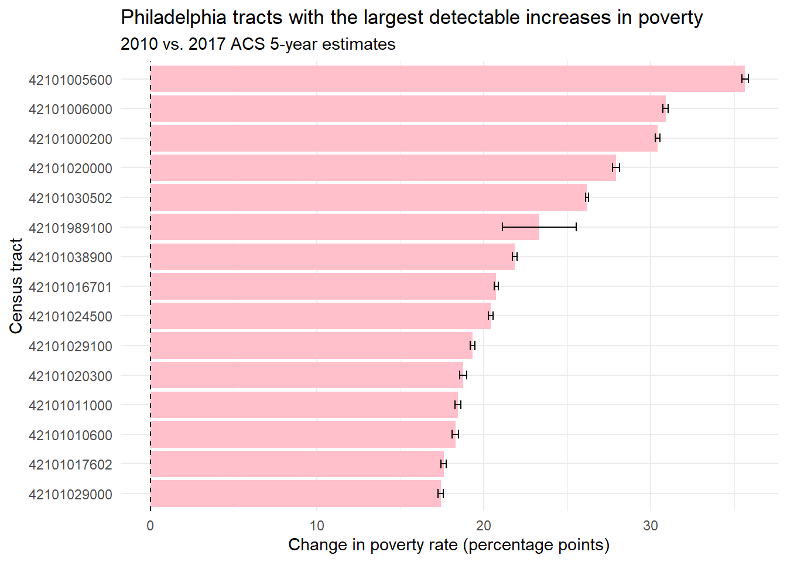
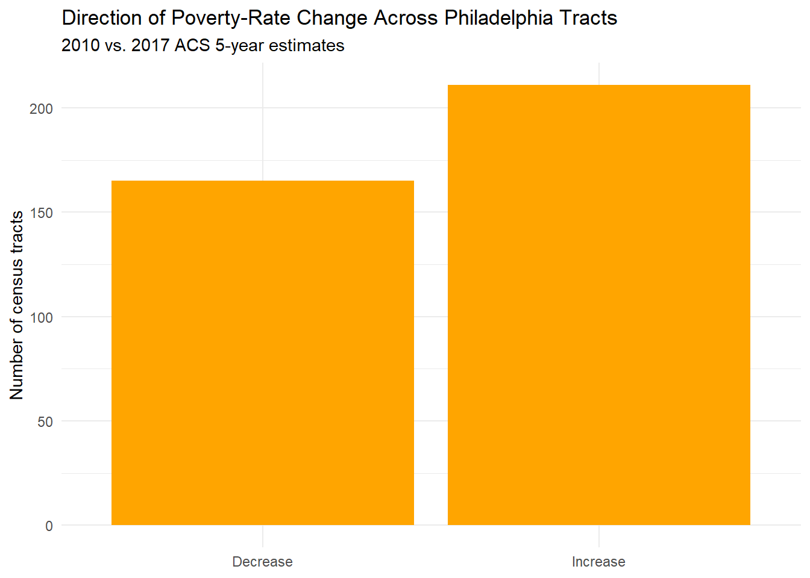

Show code
library(tidycensus)
library(tidyverse)Maya Lis
September 24, 2026
My two variables include the following; B17001_001: Poverty Status in the Past 12 Months by Sex by Age and and B17001_002 refers to the total number of people in poverty. Dividing the number of people below poverty by the total population for which poverty is calculated allows me to calculate the poverty rate and compare it between the surveys.I used the acs5 since the claim from the article uses data from the acs5 to compare two years. I used the surveys from 2010 and 2017.The survey periods the articles bases its claims on do not overlap.
# A tibble: 6 × 6
GEOID NAME B17001_001E B17001_001M B17001_002E B17001_002M
<chr> <chr> <dbl> <dbl> <dbl> <dbl>
1 42101007102 Census Tract 71.0… 5060 782 1741 629
2 42101007200 Census Tract 72, … 5256 743 1746 531
3 42101007300 Census Tract 73, … 3060 405 728 334
4 42101007400 Census Tract 74, … 4490 537 1568 517
5 42101007700 Census Tract 77, … 1636 282 628 253
6 42101007800 Census Tract 78, … 3878 525 832 271# A tibble: 6 × 6
GEOID NAME B17001_001E B17001_001M B17001_002E B17001_002M
<chr> <chr> <dbl> <dbl> <dbl> <dbl>
1 42101006700 Census Tract 67, … 6719 871 2153 561
2 42101007000 Census Tract 70, … 3171 384 770 301
3 42101008000 Census Tract 80, … 4150 511 1101 388
4 42101009400 Census Tract 94, … 4157 382 1821 364
5 42101009500 Census Tract 95, … 3135 447 1195 357
6 42101036301 Census Tract 363.… 3615 294 391 193# A tibble: 6 × 9
GEOID NAME B17001_001E B17001_001M B17001_002E B17001_002M poverty_rate
<chr> <chr> <dbl> <dbl> <dbl> <dbl> <dbl>
1 42101007102 Cens… 5060 782 1741 629 34.4
2 42101007200 Cens… 5256 743 1746 531 33.2
3 42101007300 Cens… 3060 405 728 334 23.8
4 42101007400 Cens… 4490 537 1568 517 34.9
5 42101007700 Cens… 1636 282 628 253 38.4
6 42101007800 Cens… 3878 525 832 271 21.5
# ℹ 2 more variables: poverty_moe <dbl>, cv <dbl># A tibble: 10 × 4
NAME poverty_rate poverty_moe cv
<chr> <dbl> <dbl> <dbl>
1 Census Tract 71.02, Philadelphia County, Penn… 34.4 0.112 0.327
2 Census Tract 72, Philadelphia County, Pennsyl… 33.2 0.0895 0.269
3 Census Tract 73, Philadelphia County, Pennsyl… 23.8 0.105 0.439
4 Census Tract 74, Philadelphia County, Pennsyl… 34.9 0.107 0.307
5 Census Tract 77, Philadelphia County, Pennsyl… 38.4 0.140 0.364
6 Census Tract 78, Philadelphia County, Pennsyl… 21.5 0.0636 0.296
7 Census Tract 79, Philadelphia County, Pennsyl… 15.5 0.0836 0.539
8 Census Tract 80, Philadelphia County, Pennsyl… 24.8 0.118 0.477
9 Census Tract 81.01, Philadelphia County, Penn… 38.0 0.179 0.470
10 Census Tract 81.02, Philadelphia County, Penn… 19.1 0.0699 0.366# A tibble: 6 × 9
GEOID NAME B17001_001E B17001_001M B17001_002E B17001_002M poverty_rate
<chr> <chr> <dbl> <dbl> <dbl> <dbl> <dbl>
1 42101006700 Cens… 6719 871 2153 561 32.0
2 42101007000 Cens… 3171 384 770 301 24.3
3 42101008000 Cens… 4150 511 1101 388 26.5
4 42101009400 Cens… 4157 382 1821 364 43.8
5 42101009500 Cens… 3135 447 1195 357 38.1
6 42101036301 Cens… 3615 294 391 193 10.8
# ℹ 2 more variables: poverty_moe <dbl>, cv <dbl># A tibble: 6 × 10
GEOID NAME B17001_001E B17001_001M B17001_002E B17001_002M poverty_rate
<chr> <chr> <dbl> <dbl> <dbl> <dbl> <dbl>
1 42101006700 Cens… 6719 871 2153 561 32.0
2 42101007000 Cens… 3171 384 770 301 24.3
3 42101008000 Cens… 4150 511 1101 388 26.5
4 42101009400 Cens… 4157 382 1821 364 43.8
5 42101009500 Cens… 3135 447 1195 357 38.1
6 42101036301 Cens… 3615 294 391 193 10.8
# ℹ 3 more variables: poverty_moe <dbl>, cv <dbl>, reliability <chr># A tibble: 6 × 10
GEOID NAME B17001_001E B17001_001M B17001_002E B17001_002M poverty_rate
<chr> <chr> <dbl> <dbl> <dbl> <dbl> <dbl>
1 42101007102 Cens… 5060 782 1741 629 34.4
2 42101007200 Cens… 5256 743 1746 531 33.2
3 42101007300 Cens… 3060 405 728 334 23.8
4 42101007400 Cens… 4490 537 1568 517 34.9
5 42101007700 Cens… 1636 282 628 253 38.4
6 42101007800 Cens… 3878 525 832 271 21.5
# ℹ 3 more variables: poverty_moe <dbl>, cv <dbl>, reliability <chr># A tibble: 10 × 5
GEOID poverty_rate poverty_moe cv reliability
<chr> <dbl> <dbl> <dbl> <chr>
1 42101007102 34.4 0.112 0.327 Reliable
2 42101007200 33.2 0.0895 0.269 Reliable
3 42101007300 23.8 0.105 0.439 Reliable
4 42101007400 34.9 0.107 0.307 Reliable
5 42101007700 38.4 0.140 0.364 Reliable
6 42101007800 21.5 0.0636 0.296 Reliable
7 42101007900 15.5 0.0836 0.539 Reliable
8 42101008000 24.8 0.118 0.477 Reliable
9 42101008101 38.0 0.179 0.470 Reliable
10 42101008102 19.1 0.0699 0.366 Reliable # A tibble: 10 × 5
GEOID poverty_rate poverty_moe cv reliability
<chr> <dbl> <dbl> <dbl> <chr>
1 42101006700 32.0 0.0724 0.226 Reliable
2 42101007000 24.3 0.0903 0.372 Reliable
3 42101008000 26.5 0.0876 0.330 Reliable
4 42101009400 43.8 0.0778 0.178 Reliable
5 42101009500 38.1 0.100 0.263 Reliable
6 42101036301 10.8 0.0527 0.487 Reliable
7 42101035302 10.1 0.0390 0.386 Reliable
8 42101035500 15.5 0.0505 0.326 Reliable
9 42101036203 5.21 0.0330 0.633 Reliable
10 42101036400 42.4 0.175 0.414 Reliable # A tibble: 6 × 5
GEOID poverty_rate.x poverty_moe.x poverty_rate.y poverty_moe.y
<chr> <dbl> <dbl> <dbl> <dbl>
1 42101007102 34.4 0.112 34.7 0.112
2 42101007200 33.2 0.0895 34.7 0.113
3 42101007300 23.8 0.105 29.1 0.141
4 42101007400 34.9 0.107 33.7 0.0924
5 42101007700 38.4 0.140 45.5 0.0985
6 42101007800 21.5 0.0636 24.1 0.0763# A tibble: 6 × 5
GEOID poverty_rate_2010 poverty_moe_2010 poverty_rate_2017 poverty_moe_2017
<chr> <dbl> <dbl> <dbl> <dbl>
1 4210100… 34.4 0.112 34.7 0.112
2 4210100… 33.2 0.0895 34.7 0.113
3 4210100… 23.8 0.105 29.1 0.141
4 4210100… 34.9 0.107 33.7 0.0924
5 4210100… 38.4 0.140 45.5 0.0985
6 4210100… 21.5 0.0636 24.1 0.0763# A tibble: 6 × 6
GEOID poverty_rate_2010 poverty_moe_2010 poverty_rate_2017 poverty_moe_2017
<chr> <dbl> <dbl> <dbl> <dbl>
1 4210100… 34.4 0.112 34.7 0.112
2 4210100… 33.2 0.0895 34.7 0.113
3 4210100… 23.8 0.105 29.1 0.141
4 4210100… 34.9 0.107 33.7 0.0924
5 4210100… 38.4 0.140 45.5 0.0985
6 4210100… 21.5 0.0636 24.1 0.0763
# ℹ 1 more variable: change <dbl># A tibble: 6 × 12
GEOID poverty_rate_2010 poverty_moe_2010 poverty_rate_2017 poverty_moe_2017
<chr> <dbl> <dbl> <dbl> <dbl>
1 4210100… 34.4 0.112 34.7 0.112
2 4210100… 33.2 0.0895 34.7 0.113
3 4210100… 23.8 0.105 29.1 0.141
4 4210100… 34.9 0.107 33.7 0.0924
5 4210100… 38.4 0.140 45.5 0.0985
6 4210100… 21.5 0.0636 24.1 0.0763
# ℹ 7 more variables: change <dbl>, se_2010 <dbl>, se_2017 <dbl>,
# se_diff <dbl>, moe_diff <dbl>, z <dbl>, significant <lgl># A tibble: 3 × 2
significant n
<lgl> <int>
1 FALSE 6
2 TRUE 370
3 NA 8# A tibble: 20 × 12
GEOID poverty_rate_2010 poverty_moe_2010 poverty_rate_2017 poverty_moe_2017
<chr> <dbl> <dbl> <dbl> <dbl>
1 421019… 83.8 0.224 4.95 0.0697
2 421010… 22.2 0.0597 7.64 0.0280
3 421010… 25.8 0.0875 5.96 0.0233
4 421010… 38.1 0.0779 20.0 0.0529
5 421010… 15.7 0.0681 2.46 0.0155
6 421010… 35.5 0.0955 14.7 0.0604
7 421010… 22.9 0.0793 7.51 0.0357
8 421010… 91.2 0.232 42.4 0.175
9 421010… 37.0 0.154 12.6 0.0388
10 421010… 44.3 0.116 24.1 0.0829
11 421010… 28.7 0.118 11.2 0.0456
12 421010… 19.5 0.0975 5.61 0.0278
13 421010… 43.9 0.138 21.5 0.0929
14 421010… 31.6 0.0792 17.4 0.0729
15 421010… 51.4 0.260 16.9 0.0621
16 421010… 39.4 0.156 18.2 0.0530
17 421010… 52.2 0.136 31.5 0.0886
18 421010… 29.6 0.0836 16.0 0.0707
19 421010… 54.1 0.232 25.2 0.0723
20 421010… 34.7 0.0841 21.1 0.0797
# ℹ 7 more variables: change <dbl>, se_2010 <dbl>, se_2017 <dbl>,
# se_diff <dbl>, moe_diff <dbl>, z <dbl>, significant <lgl># A tibble: 20 × 12
GEOID poverty_rate_2010 poverty_moe_2010 poverty_rate_2017 poverty_moe_2017
<chr> <dbl> <dbl> <dbl> <dbl>
1 421010… 11.8 0.0605 26.8 0.0881
2 421010… 5.50 0.0274 15.3 0.0607
3 421010… 1.16 0.0103 4.52 0.0198
4 421010… 13.4 0.0820 35.3 0.117
5 421010… 38.5 0.0861 59.0 0.101
6 421010… 27.6 0.0764 48.3 0.103
7 421010… 2.25 0.0134 10.5 0.0482
8 421010… 5.35 0.0314 15.7 0.0485
9 421010… 13.1 0.0866 48.8 0.167
10 421010… 4.05 0.0179 34.9 0.141
11 421010… 7.19 0.0361 37.6 0.134
12 421010… 5.31 0.0386 31.5 0.0786
13 421010… NaN NaN NaN NaN
14 421019… NaN NaN NaN NaN
15 421019… NaN NaN NaN NaN
16 421019… NaN NaN NaN NaN
17 421019… 9.78 0.138 NaN NaN
18 421019… NaN NaN NaN NaN
19 421019… NaN NaN NaN NaN
20 421019… NaN NaN NaN NaN
# ℹ 7 more variables: change <dbl>, se_2010 <dbl>, se_2017 <dbl>,
# se_diff <dbl>, moe_diff <dbl>, z <dbl>, significant <lgl>65 tracts show a statistically detectable change at a 90% confidence interval, while 311 tracts do not. There are 8 tracts with NA results. Looking at the data set, it appears all of these NA tracts did not have a usable poverty-rate estimate for one or both survey periods. I went ahead and excluded them since a margin of error could not be calculated from missing results.
Supported: The article’s broader claim that poverty rates increased in parts of Philadelphia is supported by my analysis. When I compared the 2006-2010 and 2013-2017 ACS estimates, I found 65 census tracts with poverty-rate changes that were statistically distinguishable from zero at the 90% confidence level.
Not supported: The changes in 311 tracts were not statistically distinguishable from zero, so these changes cannot be treated as evidence of actual increases or decreases in poverty. Therefore, the data do not support interpreting every observed change as a meaningful change in poverty.
Cannot be determined: The claim that Holmesburg had the highest increase in poverty from 2% to 19%, can’t be determined from the available information. Yes, Holmesburg’s general boundaries can be identified using publicly available neighborhood data. However, the exact neighborhood boundaries or the census tracts used to calculate the articles climas are not provided. From this, I can’t determine whether the tracts corresponding to Holmesburg would produce the reported 2% and 19% values or whether Holmesburg had the largest increase among all Philadelphia neighborhoods. The available data simply can’t verify the article’s specific Holmesburg ranking.
Original Articles Claim: “The more detailed survey released on Thursday revealed that the poverty rates in 22 majority-white neighborhoods in Philadelphia increased between the 2006-10 survey and the 2013-17 survey — in some cases quite dramatically.Holmesburg recorded the highest increase, from 2 percent to 19 percent.”
Rewritten Accurate claim: Poverty rates changed across Philadelphia between the 2006–10 and 2013–17 survey periods. Some areas experienced substantial increases in poverty. A census-tract analysis found that poverty rates increased significantly in 65 Philadelphia tracts, while changes in 311 tracts were not statistically distinguishable from zero. The results show that poverty increased in some parts of the city, but the changes were not uniform across Philadelphia.
poverty_tested %>%
filter(significant, change > 0) %>%
arrange(desc(change)) %>%
slice_head(n = 15) %>%
ggplot(aes(x = reorder(GEOID, change), y = change)) +
geom_col(fill = "pink") +
geom_errorbar(
aes(ymin = change - moe_diff,
ymax = change + moe_diff),
width = 0.3
) +
geom_hline(yintercept = 0, linetype = "dashed") +
coord_flip() +
theme_minimal() +
labs(
title = "Philadelphia tracts with the largest detectable increases in poverty",
subtitle = "2010 vs. 2017 ACS 5-year estimates",
x = "Census tract",
y = "Change in poverty rate (percentage points)"
)
library(gt)
reliability_table <- poverty_2017 %>%
mutate(
dot = case_when(
cv < 12 ~ "🟢",
cv <= 40 ~ "🟡",
cv > 40 ~ "🔴"
)
) %>%
arrange(desc(cv)) %>%
select(dot, GEOID, poverty_rate, poverty_moe, cv, reliability)
reliability_table %>%
gt() %>%
fmt_number(columns = c(poverty_rate, poverty_moe), decimals = 1) %>%
fmt_number(columns = cv, decimals = 1) %>%
cols_label(
dot = "",
GEOID = "Census tract",
poverty_rate = "Poverty rate (%)",
poverty_moe = "MOE",
cv = "CV (%)",
reliability = "Reliability"
) %>%
cols_align(align = "center", columns = dot) %>%
tab_header(
title = "Poverty Rate Reliability",
subtitle = "Philadelphia census tracts, ACS 2017 5-year estimates"
) %>%
tab_source_note(
"Reliability thresholds follow Jurjevich et al. (2018): CV < 12% reliable, 12–40% somewhat reliable, > 40% unreliable."
)| Poverty Rate Reliability | |||||
| Philadelphia census tracts, ACS 2017 5-year estimates | |||||
| Census tract | Poverty rate (%) | MOE | CV (%) | Reliability | |
|---|---|---|---|---|---|
| 🟢 | 42101989100 | 92.5 | 2.2 | 2.4 | Reliable |
| 🟢 | 42101980000 | 4.9 | 0.1 | 1.4 | Reliable |
| 🟢 | 42101023100 | 0.8 | 0.0 | 1.1 | Reliable |
| 🟢 | 42101025600 | 3.6 | 0.0 | 1.1 | Reliable |
| 🟢 | 42101980100 | 13.3 | 0.1 | 1.0 | Reliable |
| 🟢 | 42101038600 | 3.0 | 0.0 | 1.0 | Reliable |
| 🟢 | 42101980200 | 11.5 | 0.1 | 0.8 | Reliable |
| 🟢 | 42101034000 | 9.7 | 0.1 | 0.8 | Reliable |
| 🟢 | 42101034702 | 2.0 | 0.0 | 0.8 | Reliable |
| 🟢 | 42101001002 | 6.4 | 0.0 | 0.8 | Reliable |
| 🟢 | 42101022000 | 1.3 | 0.0 | 0.7 | Reliable |
| 🟢 | 42101036303 | 5.7 | 0.0 | 0.7 | Reliable |
| 🟢 | 42101002900 | 17.6 | 0.1 | 0.7 | Reliable |
| 🟢 | 42101034100 | 9.8 | 0.1 | 0.7 | Reliable |
| 🟢 | 42101036501 | 12.6 | 0.1 | 0.7 | Reliable |
| 🟢 | 42101000801 | 13.9 | 0.1 | 0.7 | Reliable |
| 🟢 | 42101000402 | 4.3 | 0.0 | 0.7 | Reliable |
| 🟢 | 42101023600 | 10.4 | 0.1 | 0.7 | Reliable |
| 🟢 | 42101036600 | 4.8 | 0.0 | 0.7 | Reliable |
| 🟢 | 42101035602 | 2.5 | 0.0 | 0.7 | Reliable |
| 🟢 | 42101023500 | 9.3 | 0.1 | 0.7 | Reliable |
| 🟢 | 42101036502 | 6.7 | 0.0 | 0.7 | Reliable |
| 🟢 | 42101035200 | 5.9 | 0.0 | 0.7 | Reliable |
| 🟢 | 42101001001 | 5.9 | 0.0 | 0.7 | Reliable |
| 🟢 | 42101004002 | 7.2 | 0.0 | 0.6 | Reliable |
| 🟢 | 42101001201 | 3.0 | 0.0 | 0.6 | Reliable |
| 🟢 | 42101038500 | 7.0 | 0.0 | 0.6 | Reliable |
| 🟢 | 42101034400 | 5.4 | 0.0 | 0.6 | Reliable |
| 🟢 | 42101036203 | 5.2 | 0.0 | 0.6 | Reliable |
| 🟢 | 42101036100 | 14.3 | 0.1 | 0.6 | Reliable |
| 🟢 | 42101001700 | 2.3 | 0.0 | 0.6 | Reliable |
| 🟢 | 42101037300 | 2.5 | 0.0 | 0.6 | Reliable |
| 🟢 | 42101001800 | 6.5 | 0.0 | 0.6 | Reliable |
| 🟢 | 42101030600 | 11.1 | 0.1 | 0.6 | Reliable |
| 🟢 | 42101004201 | 16.3 | 0.1 | 0.6 | Reliable |
| 🟢 | 42101013601 | 2.1 | 0.0 | 0.6 | Reliable |
| 🟢 | 42101014200 | 8.7 | 0.1 | 0.6 | Reliable |
| 🟢 | 42101021900 | 5.6 | 0.0 | 0.6 | Reliable |
| 🟢 | 42101035301 | 7.4 | 0.0 | 0.6 | Reliable |
| 🟢 | 42101021500 | 15.6 | 0.1 | 0.6 | Reliable |
| 🟢 | 42101004202 | 15.1 | 0.1 | 0.6 | Reliable |
| 🟢 | 42101026302 | 11.0 | 0.1 | 0.6 | Reliable |
| 🟢 | 42101021200 | 7.9 | 0.0 | 0.6 | Reliable |
| 🟢 | 42101032000 | 14.6 | 0.1 | 0.6 | Reliable |
| 🟢 | 42101034802 | 13.5 | 0.1 | 0.6 | Reliable |
| 🟢 | 42101026200 | 7.5 | 0.0 | 0.6 | Reliable |
| 🟢 | 42101002702 | 11.9 | 0.1 | 0.6 | Reliable |
| 🟢 | 42101031700 | 13.2 | 0.1 | 0.6 | Reliable |
| 🟢 | 42101018001 | 13.2 | 0.1 | 0.6 | Reliable |
| 🟢 | 42101034701 | 9.9 | 0.1 | 0.6 | Reliable |
| 🟢 | 42101020900 | 12.5 | 0.1 | 0.5 | Reliable |
| 🟢 | 42101037200 | 13.9 | 0.1 | 0.5 | Reliable |
| 🟢 | 42101038700 | 8.2 | 0.0 | 0.5 | Reliable |
| 🟢 | 42101036700 | 6.0 | 0.0 | 0.5 | Reliable |
| 🟢 | 42101021700 | 3.5 | 0.0 | 0.5 | Reliable |
| 🟢 | 42101010100 | 24.3 | 0.1 | 0.5 | Reliable |
| 🟢 | 42101002200 | 24.6 | 0.1 | 0.5 | Reliable |
| 🟢 | 42101003800 | 8.1 | 0.0 | 0.5 | Reliable |
| 🟢 | 42101029200 | 18.6 | 0.1 | 0.5 | Reliable |
| 🟢 | 42101000803 | 10.7 | 0.1 | 0.5 | Reliable |
| 🟢 | 42101032500 | 29.4 | 0.2 | 0.5 | Reliable |
| 🟢 | 42101031501 | 16.8 | 0.1 | 0.5 | Reliable |
| 🟢 | 42101032100 | 29.3 | 0.2 | 0.5 | Reliable |
| 🟢 | 42101033900 | 15.6 | 0.1 | 0.5 | Reliable |
| 🟢 | 42101000804 | 8.2 | 0.0 | 0.5 | Reliable |
| 🟢 | 42101034200 | 13.4 | 0.1 | 0.5 | Reliable |
| 🟢 | 42101026000 | 12.0 | 0.1 | 0.5 | Reliable |
| 🟢 | 42101031000 | 20.2 | 0.1 | 0.5 | Reliable |
| 🟢 | 42101037900 | 12.4 | 0.1 | 0.5 | Reliable |
| 🟢 | 42101014100 | 34.9 | 0.2 | 0.5 | Reliable |
| 🟢 | 42101025500 | 7.8 | 0.0 | 0.5 | Reliable |
| 🟢 | 42101032300 | 12.3 | 0.1 | 0.5 | Reliable |
| 🟢 | 42101035800 | 7.1 | 0.0 | 0.5 | Reliable |
| 🟢 | 42101036201 | 4.7 | 0.0 | 0.5 | Reliable |
| 🟢 | 42101008200 | 22.0 | 0.1 | 0.5 | Reliable |
| 🟢 | 42101013402 | 7.1 | 0.0 | 0.5 | Reliable |
| 🟢 | 42101026600 | 14.8 | 0.1 | 0.5 | Reliable |
| 🟢 | 42101018300 | 5.6 | 0.0 | 0.5 | Reliable |
| 🟢 | 42101036302 | 5.5 | 0.0 | 0.5 | Reliable |
| 🟢 | 42101025900 | 10.8 | 0.1 | 0.5 | Reliable |
| 🟢 | 42101021100 | 12.2 | 0.1 | 0.5 | Reliable |
| 🟢 | 42101034803 | 5.0 | 0.0 | 0.5 | Reliable |
| 🟢 | 42101009802 | 20.3 | 0.1 | 0.5 | Reliable |
| 🟢 | 42101011700 | 35.9 | 0.2 | 0.5 | Reliable |
| 🟢 | 42101014300 | 11.9 | 0.1 | 0.5 | Reliable |
| 🟢 | 42101036301 | 10.8 | 0.1 | 0.5 | Reliable |
| 🟢 | 42101005400 | 13.3 | 0.1 | 0.5 | Reliable |
| 🟢 | 42101005500 | 17.0 | 0.1 | 0.5 | Reliable |
| 🟢 | 42101013401 | 7.2 | 0.0 | 0.5 | Reliable |
| 🟢 | 42101007300 | 29.1 | 0.1 | 0.5 | Reliable |
| 🟢 | 42101033800 | 13.1 | 0.1 | 0.5 | Reliable |
| 🟢 | 42101026100 | 21.4 | 0.1 | 0.5 | Reliable |
| 🟢 | 42101023800 | 12.6 | 0.1 | 0.5 | Reliable |
| 🟢 | 42101030200 | 19.2 | 0.1 | 0.5 | Reliable |
| 🟢 | 42101038800 | 6.7 | 0.0 | 0.5 | Reliable |
| 🟢 | 42101034801 | 9.1 | 0.0 | 0.5 | Reliable |
| 🟢 | 42101002300 | 7.5 | 0.0 | 0.5 | Reliable |
| 🟢 | 42101012500 | 13.7 | 0.1 | 0.5 | Reliable |
| 🟢 | 42101025200 | 30.8 | 0.1 | 0.5 | Reliable |
| 🟢 | 42101034600 | 16.7 | 0.1 | 0.5 | Reliable |
| 🟢 | 42101026400 | 10.1 | 0.0 | 0.5 | Reliable |
| 🟢 | 42101033101 | 16.9 | 0.1 | 0.5 | Reliable |
| 🟢 | 42101032600 | 22.2 | 0.1 | 0.5 | Reliable |
| 🟢 | 42101017201 | 40.7 | 0.2 | 0.5 | Reliable |
| 🟢 | 42101035100 | 10.5 | 0.0 | 0.5 | Reliable |
| 🟢 | 42101016100 | 26.4 | 0.1 | 0.5 | Reliable |
| 🟢 | 42101021600 | 16.6 | 0.1 | 0.5 | Reliable |
| 🟢 | 42101009801 | 19.6 | 0.1 | 0.4 | Reliable |
| 🟢 | 42101033200 | 4.6 | 0.0 | 0.4 | Reliable |
| 🟢 | 42101020102 | 28.9 | 0.1 | 0.4 | Reliable |
| 🟢 | 42101002801 | 18.2 | 0.1 | 0.4 | Reliable |
| 🟢 | 42101025800 | 5.3 | 0.0 | 0.4 | Reliable |
| 🟢 | 42101001600 | 7.1 | 0.0 | 0.4 | Reliable |
| 🟢 | 42101036202 | 9.3 | 0.0 | 0.4 | Reliable |
| 🟢 | 42101033600 | 18.1 | 0.1 | 0.4 | Reliable |
| 🟢 | 42101034900 | 16.0 | 0.1 | 0.4 | Reliable |
| 🟢 | 42101003902 | 11.5 | 0.1 | 0.4 | Reliable |
| 🟢 | 42101032900 | 22.0 | 0.1 | 0.4 | Reliable |
| 🟢 | 42101038400 | 4.5 | 0.0 | 0.4 | Reliable |
| 🟢 | 42101026301 | 13.4 | 0.1 | 0.4 | Reliable |
| 🟢 | 42101033300 | 14.0 | 0.1 | 0.4 | Reliable |
| 🟢 | 42101008602 | 18.4 | 0.1 | 0.4 | Reliable |
| 🟢 | 42101013602 | 9.3 | 0.0 | 0.4 | Reliable |
| 🟢 | 42101027401 | 21.5 | 0.1 | 0.4 | Reliable |
| 🟢 | 42101007900 | 12.6 | 0.1 | 0.4 | Reliable |
| 🟢 | 42101030700 | 26.7 | 0.1 | 0.4 | Reliable |
| 🟢 | 42101001500 | 13.9 | 0.1 | 0.4 | Reliable |
| 🟢 | 42101037800 | 17.9 | 0.1 | 0.4 | Reliable |
| 🟢 | 42101021800 | 18.9 | 0.1 | 0.4 | Reliable |
| 🟢 | 42101021300 | 9.9 | 0.0 | 0.4 | Reliable |
| 🟢 | 42101011400 | 17.4 | 0.1 | 0.4 | Reliable |
| 🟢 | 42101000100 | 7.0 | 0.0 | 0.4 | Reliable |
| 🟢 | 42101002100 | 23.7 | 0.1 | 0.4 | Reliable |
| 🟢 | 42101017900 | 26.4 | 0.1 | 0.4 | Reliable |
| 🟢 | 42101011500 | 15.8 | 0.1 | 0.4 | Reliable |
| 🟢 | 42101036400 | 42.4 | 0.2 | 0.4 | Reliable |
| 🟢 | 42101013500 | 15.6 | 0.1 | 0.4 | Reliable |
| 🟢 | 42101002500 | 14.7 | 0.1 | 0.4 | Reliable |
| 🟢 | 42101001102 | 18.0 | 0.1 | 0.4 | Reliable |
| 🟢 | 42101001900 | 11.2 | 0.0 | 0.4 | Reliable |
| 🟢 | 42101031800 | 24.6 | 0.1 | 0.4 | Reliable |
| 🟢 | 42101006000 | 34.9 | 0.1 | 0.4 | Reliable |
| 🟢 | 42101011200 | 37.6 | 0.2 | 0.4 | Reliable |
| 🟢 | 42101031600 | 26.3 | 0.1 | 0.4 | Reliable |
| 🟢 | 42101033702 | 9.8 | 0.0 | 0.4 | Reliable |
| 🟢 | 42101030800 | 15.3 | 0.1 | 0.4 | Reliable |
| 🟢 | 42101015700 | 26.8 | 0.1 | 0.4 | Reliable |
| 🟢 | 42101013100 | 30.9 | 0.1 | 0.4 | Reliable |
| 🟢 | 42101027500 | 25.8 | 0.1 | 0.4 | Reliable |
| 🟢 | 42101020700 | 16.8 | 0.1 | 0.4 | Reliable |
| 🟢 | 42101025700 | 9.6 | 0.0 | 0.4 | Reliable |
| 🟢 | 42101002802 | 6.0 | 0.0 | 0.4 | Reliable |
| 🟢 | 42101004001 | 20.9 | 0.1 | 0.4 | Reliable |
| 🟢 | 42101030900 | 26.3 | 0.1 | 0.4 | Reliable |
| 🟢 | 42101020400 | 34.3 | 0.1 | 0.4 | Reliable |
| 🟢 | 42101031200 | 31.7 | 0.1 | 0.4 | Reliable |
| 🟢 | 42101015800 | 14.2 | 0.1 | 0.4 | Reliable |
| 🟢 | 42101012000 | 13.2 | 0.1 | 0.4 | Reliable |
| 🟢 | 42101035302 | 10.1 | 0.0 | 0.4 | Reliable |
| 🟢 | 42101033000 | 31.6 | 0.1 | 0.4 | Reliable |
| 🟢 | 42101006100 | 25.0 | 0.1 | 0.4 | Reliable |
| 🟢 | 42101023700 | 9.0 | 0.0 | 0.4 | Reliable |
| 🟢 | 42101035601 | 8.5 | 0.0 | 0.4 | Reliable |
| 🟢 | 42101008400 | 27.8 | 0.1 | 0.4 | Reliable |
| 🟢 | 42101026700 | 24.9 | 0.1 | 0.4 | Reliable |
| 🟢 | 42101003702 | 21.1 | 0.1 | 0.4 | Reliable |
| 🟢 | 42101033102 | 14.2 | 0.1 | 0.4 | Reliable |
| 🟢 | 42101026800 | 22.9 | 0.1 | 0.4 | Reliable |
| 🟢 | 42101027100 | 15.9 | 0.1 | 0.4 | Reliable |
| 🟢 | 42101027700 | 29.7 | 0.1 | 0.4 | Reliable |
| 🟢 | 42101009300 | 28.6 | 0.1 | 0.4 | Reliable |
| 🟢 | 42101036000 | 10.8 | 0.0 | 0.4 | Reliable |
| 🟢 | 42101007000 | 24.3 | 0.1 | 0.4 | Reliable |
| 🟢 | 42101033400 | 20.8 | 0.1 | 0.4 | Reliable |
| 🟢 | 42101025300 | 19.6 | 0.1 | 0.4 | Reliable |
| 🟢 | 42101008101 | 43.5 | 0.2 | 0.4 | Reliable |
| 🟢 | 42101038100 | 25.2 | 0.1 | 0.4 | Reliable |
| 🟢 | 42101001300 | 7.6 | 0.0 | 0.4 | Reliable |
| 🟢 | 42101002000 | 16.9 | 0.1 | 0.4 | Reliable |
| 🟢 | 42101008102 | 34.7 | 0.1 | 0.4 | Reliable |
| 🟢 | 42101013300 | 32.8 | 0.1 | 0.4 | Reliable |
| 🟢 | 42101028100 | 30.8 | 0.1 | 0.4 | Reliable |
| 🟢 | 42101024900 | 39.5 | 0.1 | 0.4 | Reliable |
| 🟢 | 42101011300 | 28.9 | 0.1 | 0.4 | Reliable |
| 🟢 | 42101035900 | 8.4 | 0.0 | 0.4 | Reliable |
| 🟢 | 42101038200 | 32.0 | 0.1 | 0.4 | Reliable |
| 🟢 | 42101021000 | 23.8 | 0.1 | 0.4 | Reliable |
| 🟢 | 42101037500 | 23.4 | 0.1 | 0.4 | Reliable |
| 🟢 | 42101020300 | 46.2 | 0.2 | 0.4 | Reliable |
| 🟢 | 42101000200 | 37.6 | 0.1 | 0.4 | Reliable |
| 🟢 | 42101027600 | 17.9 | 0.1 | 0.4 | Reliable |
| 🟢 | 42101012100 | 30.2 | 0.1 | 0.4 | Reliable |
| 🟢 | 42101002701 | 28.0 | 0.1 | 0.3 | Reliable |
| 🟢 | 42101003001 | 25.6 | 0.1 | 0.3 | Reliable |
| 🟢 | 42101027901 | 29.5 | 0.1 | 0.3 | Reliable |
| 🟢 | 42101006500 | 29.8 | 0.1 | 0.3 | Reliable |
| 🟢 | 42101011900 | 30.3 | 0.1 | 0.3 | Reliable |
| 🟢 | 42101013900 | 41.7 | 0.1 | 0.3 | Reliable |
| 🟢 | 42101017100 | 24.1 | 0.1 | 0.3 | Reliable |
| 🟢 | 42101005600 | 48.8 | 0.2 | 0.3 | Reliable |
| 🟢 | 42101024300 | 32.1 | 0.1 | 0.3 | Reliable |
| 🟢 | 42101019000 | 31.0 | 0.1 | 0.3 | Reliable |
| 🟢 | 42101034502 | 16.2 | 0.1 | 0.3 | Reliable |
| 🟢 | 42101028901 | 31.3 | 0.1 | 0.3 | Reliable |
| 🟢 | 42101000300 | 8.4 | 0.0 | 0.3 | Reliable |
| 🟢 | 42101007101 | 37.2 | 0.1 | 0.3 | Reliable |
| 🟢 | 42101006400 | 30.5 | 0.1 | 0.3 | Reliable |
| 🟢 | 42101035702 | 21.5 | 0.1 | 0.3 | Reliable |
| 🟢 | 42101024400 | 34.8 | 0.1 | 0.3 | Reliable |
| 🟢 | 42101008601 | 19.8 | 0.1 | 0.3 | Reliable |
| 🟢 | 42101018002 | 24.9 | 0.1 | 0.3 | Reliable |
| 🟢 | 42101001400 | 13.4 | 0.0 | 0.3 | Reliable |
| 🟢 | 42101006200 | 38.2 | 0.1 | 0.3 | Reliable |
| 🟢 | 42101038900 | 35.3 | 0.1 | 0.3 | Reliable |
| 🟢 | 42101003901 | 21.6 | 0.1 | 0.3 | Reliable |
| 🟢 | 42101011800 | 24.7 | 0.1 | 0.3 | Reliable |
| 🟢 | 42101008000 | 26.5 | 0.1 | 0.3 | Reliable |
| 🟢 | 42101033500 | 26.8 | 0.1 | 0.3 | Reliable |
| 🟢 | 42101035500 | 15.5 | 0.1 | 0.3 | Reliable |
| 🟢 | 42101026500 | 23.4 | 0.1 | 0.3 | Reliable |
| 🟢 | 42101030100 | 35.8 | 0.1 | 0.3 | Reliable |
| 🟢 | 42101000700 | 18.6 | 0.1 | 0.3 | Reliable |
| 🟢 | 42101007200 | 34.7 | 0.1 | 0.3 | Reliable |
| 🟢 | 42101007102 | 34.7 | 0.1 | 0.3 | Reliable |
| 🟢 | 42101002400 | 11.3 | 0.0 | 0.3 | Reliable |
| 🟢 | 42101019100 | 32.6 | 0.1 | 0.3 | Reliable |
| 🟢 | 42101038000 | 28.7 | 0.1 | 0.3 | Reliable |
| 🟢 | 42101000401 | 18.5 | 0.1 | 0.3 | Reliable |
| 🟢 | 42101010200 | 40.4 | 0.1 | 0.3 | Reliable |
| 🟢 | 42101028200 | 30.8 | 0.1 | 0.3 | Reliable |
| 🟢 | 42101028400 | 38.8 | 0.1 | 0.3 | Reliable |
| 🟢 | 42101014900 | 38.7 | 0.1 | 0.3 | Reliable |
| 🟢 | 42101027800 | 30.2 | 0.1 | 0.3 | Reliable |
| 🟢 | 42101007800 | 24.1 | 0.1 | 0.3 | Reliable |
| 🟢 | 42101001101 | 18.5 | 0.1 | 0.3 | Reliable |
| 🟢 | 42101024100 | 43.7 | 0.1 | 0.3 | Reliable |
| 🟢 | 42101010300 | 40.1 | 0.1 | 0.3 | Reliable |
| 🟢 | 42101017300 | 31.7 | 0.1 | 0.3 | Reliable |
| 🟢 | 42101003200 | 36.2 | 0.1 | 0.3 | Reliable |
| 🟢 | 42101020000 | 58.5 | 0.2 | 0.3 | Reliable |
| 🟢 | 42101027402 | 27.6 | 0.1 | 0.3 | Reliable |
| 🟢 | 42101024800 | 23.5 | 0.1 | 0.3 | Reliable |
| 🟢 | 42101023900 | 28.5 | 0.1 | 0.3 | Reliable |
| 🟢 | 42101008302 | 33.4 | 0.1 | 0.3 | Reliable |
| 🟢 | 42101027300 | 17.6 | 0.1 | 0.3 | Reliable |
| 🟢 | 42101027200 | 15.7 | 0.0 | 0.3 | Reliable |
| 🟢 | 42101008301 | 22.0 | 0.1 | 0.3 | Reliable |
| 🟢 | 42101001202 | 10.7 | 0.0 | 0.3 | Reliable |
| 🟢 | 42101031102 | 12.6 | 0.0 | 0.3 | Reliable |
| 🟢 | 42101003300 | 35.1 | 0.1 | 0.3 | Reliable |
| 🟢 | 42101017400 | 43.0 | 0.1 | 0.3 | Reliable |
| 🟢 | 42101010400 | 45.7 | 0.1 | 0.3 | Reliable |
| 🟢 | 42101033701 | 19.8 | 0.1 | 0.3 | Reliable |
| 🟢 | 42101031502 | 24.3 | 0.1 | 0.3 | Reliable |
| 🟢 | 42101029000 | 43.1 | 0.1 | 0.3 | Reliable |
| 🟢 | 42101008801 | 64.0 | 0.2 | 0.3 | Reliable |
| 🟢 | 42101028300 | 33.7 | 0.1 | 0.3 | Reliable |
| 🟢 | 42101000600 | 13.9 | 0.0 | 0.3 | Reliable |
| 🟢 | 42101014500 | 44.8 | 0.1 | 0.3 | Reliable |
| 🟢 | 42101016902 | 45.9 | 0.1 | 0.3 | Reliable |
| 🟢 | 42101026900 | 15.4 | 0.0 | 0.3 | Reliable |
| 🟢 | 42101003002 | 18.2 | 0.1 | 0.3 | Reliable |
| 🟢 | 42101014600 | 28.7 | 0.1 | 0.3 | Reliable |
| 🟢 | 42101025400 | 11.6 | 0.0 | 0.3 | Reliable |
| 🟢 | 42101011000 | 48.2 | 0.1 | 0.3 | Reliable |
| 🟢 | 42101012203 | 25.2 | 0.1 | 0.3 | Reliable |
| 🟢 | 42101016901 | 37.8 | 0.1 | 0.3 | Reliable |
| 🟢 | 42101037700 | 45.2 | 0.1 | 0.3 | Reliable |
| 🟢 | 42101024200 | 34.1 | 0.1 | 0.3 | Reliable |
| 🟢 | 42101020600 | 24.2 | 0.1 | 0.3 | Reliable |
| 🟢 | 42101031401 | 25.7 | 0.1 | 0.3 | Reliable |
| 🟢 | 42101013700 | 31.5 | 0.1 | 0.3 | Reliable |
| 🟢 | 42101027000 | 14.2 | 0.0 | 0.3 | Reliable |
| 🟢 | 42101016800 | 46.8 | 0.1 | 0.3 | Reliable |
| 🟢 | 42101014800 | 53.7 | 0.2 | 0.3 | Reliable |
| 🟢 | 42101003701 | 31.1 | 0.1 | 0.3 | Reliable |
| 🟢 | 42101031101 | 27.9 | 0.1 | 0.3 | Reliable |
| 🟢 | 42101018400 | 13.2 | 0.0 | 0.3 | Reliable |
| 🟢 | 42101030501 | 35.0 | 0.1 | 0.3 | Reliable |
| 🟢 | 42101004102 | 33.7 | 0.1 | 0.3 | Reliable |
| 🟢 | 42101020500 | 32.5 | 0.1 | 0.3 | Reliable |
| 🟢 | 42101007400 | 33.7 | 0.1 | 0.3 | Reliable |
| 🟢 | 42101011100 | 39.3 | 0.1 | 0.3 | Reliable |
| 🟢 | 42101014000 | 41.5 | 0.1 | 0.3 | Reliable |
| 🟢 | 42101028500 | 38.9 | 0.1 | 0.3 | Reliable |
| 🟢 | 42101008701 | 25.1 | 0.1 | 0.3 | Reliable |
| 🟢 | 42101009600 | 35.2 | 0.1 | 0.3 | Reliable |
| 🟢 | 42101008500 | 36.1 | 0.1 | 0.3 | Reliable |
| 🟢 | 42101004101 | 40.4 | 0.1 | 0.3 | Reliable |
| 🟢 | 42101010000 | 29.7 | 0.1 | 0.3 | Reliable |
| 🟢 | 42101027902 | 37.6 | 0.1 | 0.3 | Reliable |
| 🟢 | 42101010600 | 44.7 | 0.1 | 0.3 | Reliable |
| 🟢 | 42101000902 | 20.0 | 0.1 | 0.3 | Reliable |
| 🟢 | 42101016000 | 10.3 | 0.0 | 0.3 | Reliable |
| 🟢 | 42101012204 | 19.6 | 0.1 | 0.3 | Reliable |
| 🟢 | 42101031300 | 31.4 | 0.1 | 0.3 | Reliable |
| 🟢 | 42101009500 | 38.1 | 0.1 | 0.3 | Reliable |
| 🟢 | 42101003100 | 21.8 | 0.1 | 0.3 | Reliable |
| 🟢 | 42101000901 | 24.3 | 0.1 | 0.3 | Reliable |
| 🟢 | 42101028000 | 37.4 | 0.1 | 0.3 | Reliable |
| 🟢 | 42101018800 | 48.1 | 0.1 | 0.3 | Reliable |
| 🟢 | 42101003600 | 45.1 | 0.1 | 0.3 | Reliable |
| 🟢 | 42101013200 | 33.8 | 0.1 | 0.3 | Reliable |
| 🟢 | 42101006900 | 62.8 | 0.2 | 0.3 | Reliable |
| 🟢 | 42101030000 | 35.9 | 0.1 | 0.3 | Reliable |
| 🟢 | 42101031900 | 19.5 | 0.0 | 0.3 | Reliable |
| 🟢 | 42101021400 | 20.3 | 0.1 | 0.3 | Reliable |
| 🟢 | 42101037600 | 37.3 | 0.1 | 0.3 | Reliable |
| 🟢 | 42101014700 | 62.1 | 0.2 | 0.3 | Reliable |
| 🟢 | 42101024000 | 26.2 | 0.1 | 0.3 | Reliable |
| 🟢 | 42101019700 | 44.4 | 0.1 | 0.3 | Reliable |
| 🟢 | 42101030502 | 31.5 | 0.1 | 0.2 | Reliable |
| 🟢 | 42101017000 | 34.9 | 0.1 | 0.2 | Reliable |
| 🟢 | 42101019501 | 53.0 | 0.1 | 0.2 | Reliable |
| 🟢 | 42101035701 | 25.0 | 0.1 | 0.2 | Reliable |
| 🟢 | 42101015200 | 57.7 | 0.1 | 0.2 | Reliable |
| 🟢 | 42101034501 | 22.2 | 0.1 | 0.2 | Reliable |
| 🟢 | 42101010500 | 44.9 | 0.1 | 0.2 | Reliable |
| 🟢 | 42101015101 | 50.7 | 0.1 | 0.2 | Reliable |
| 🟢 | 42101016500 | 58.1 | 0.1 | 0.2 | Reliable |
| 🟢 | 42101028600 | 34.2 | 0.1 | 0.2 | Reliable |
| 🟢 | 42101039000 | 36.9 | 0.1 | 0.2 | Reliable |
| 🟢 | 42101029300 | 57.0 | 0.1 | 0.2 | Reliable |
| 🟢 | 42101024600 | 41.0 | 0.1 | 0.2 | Reliable |
| 🟢 | 42101029800 | 33.5 | 0.1 | 0.2 | Reliable |
| 🟢 | 42101019900 | 62.1 | 0.1 | 0.2 | Reliable |
| 🟢 | 42101020800 | 27.0 | 0.1 | 0.2 | Reliable |
| 🟢 | 42101028800 | 43.8 | 0.1 | 0.2 | Reliable |
| 🟢 | 42101010800 | 43.1 | 0.1 | 0.2 | Reliable |
| 🟢 | 42101013800 | 33.1 | 0.1 | 0.2 | Reliable |
| 🟢 | 42101006700 | 32.0 | 0.1 | 0.2 | Reliable |
| 🟢 | 42101010700 | 41.1 | 0.1 | 0.2 | Reliable |
| 🟢 | 42101020200 | 46.0 | 0.1 | 0.2 | Reliable |
| 🟢 | 42101014400 | 32.1 | 0.1 | 0.2 | Reliable |
| 🟢 | 42101008702 | 33.4 | 0.1 | 0.2 | Reliable |
| 🟢 | 42101006300 | 44.3 | 0.1 | 0.2 | Reliable |
| 🟢 | 42101019200 | 52.1 | 0.1 | 0.2 | Reliable |
| 🟢 | 42101016600 | 51.8 | 0.1 | 0.2 | Reliable |
| 🟢 | 42101007700 | 45.5 | 0.1 | 0.2 | Reliable |
| 🟢 | 42101029100 | 46.7 | 0.1 | 0.2 | Reliable |
| 🟢 | 42101009200 | 43.5 | 0.1 | 0.2 | Reliable |
| 🟢 | 42101006600 | 41.5 | 0.1 | 0.2 | Reliable |
| 🟢 | 42101024700 | 33.6 | 0.1 | 0.2 | Reliable |
| 🟢 | 42101029400 | 55.2 | 0.1 | 0.2 | Reliable |
| 🟢 | 42101017701 | 55.9 | 0.1 | 0.2 | Reliable |
| 🟢 | 42101015102 | 49.6 | 0.1 | 0.2 | Reliable |
| 🟢 | 42101016701 | 48.3 | 0.1 | 0.2 | Reliable |
| 🟢 | 42101015600 | 43.1 | 0.1 | 0.2 | Reliable |
| 🟢 | 42101038300 | 57.9 | 0.1 | 0.2 | Reliable |
| 🟢 | 42101019800 | 50.2 | 0.1 | 0.2 | Reliable |
| 🟢 | 42101017202 | 44.6 | 0.1 | 0.2 | Reliable |
| 🟢 | 42101031402 | 28.3 | 0.1 | 0.2 | Reliable |
| 🟢 | 42101008802 | 64.2 | 0.1 | 0.2 | Reliable |
| 🟢 | 42101019502 | 50.9 | 0.1 | 0.2 | Reliable |
| 🟢 | 42101009100 | 50.8 | 0.1 | 0.2 | Reliable |
| 🟢 | 42101012201 | 32.0 | 0.1 | 0.2 | Reliable |
| 🟢 | 42101016200 | 47.6 | 0.1 | 0.2 | Reliable |
| 🟢 | 42101036900 | 45.1 | 0.1 | 0.2 | Reliable |
| 🟢 | 42101017800 | 56.5 | 0.1 | 0.2 | Reliable |
| 🟢 | 42101028700 | 41.7 | 0.1 | 0.2 | Reliable |
| 🟢 | 42101017602 | 61.6 | 0.1 | 0.2 | Reliable |
| 🟢 | 42101029900 | 49.6 | 0.1 | 0.2 | Reliable |
| 🟢 | 42101017601 | 63.4 | 0.1 | 0.2 | Reliable |
| 🟢 | 42101000500 | 34.8 | 0.1 | 0.2 | Reliable |
| 🟢 | 42101009400 | 43.8 | 0.1 | 0.2 | Reliable |
| 🟢 | 42101016300 | 54.9 | 0.1 | 0.2 | Reliable |
| 🟢 | 42101020101 | 46.8 | 0.1 | 0.2 | Reliable |
| 🟢 | 42101016400 | 49.9 | 0.1 | 0.2 | Reliable |
| 🟢 | 42101028902 | 39.0 | 0.1 | 0.2 | Reliable |
| 🟢 | 42101024500 | 59.0 | 0.1 | 0.2 | Reliable |
| 🟢 | 42101016702 | 36.3 | 0.1 | 0.2 | Reliable |
| 🟢 | 42101017500 | 59.6 | 0.1 | 0.2 | Reliable |
| 🟢 | 42101010900 | 55.5 | 0.1 | 0.1 | Reliable |
| 🟢 | 42101017702 | 59.5 | 0.1 | 0.1 | Reliable |
| 🟢 | 42101009000 | 61.0 | 0.1 | 0.1 | Reliable |
| 🟢 | 42101015300 | 68.0 | 0.1 | 0.1 | Reliable |
| NA | 42101005000 | NaN | NaN | NaN | NA |
| NA | 42101980300 | NaN | NaN | NaN | NA |
| NA | 42101980400 | NaN | NaN | NaN | NA |
| NA | 42101980500 | NaN | NaN | NaN | NA |
| NA | 42101980600 | NaN | NaN | NaN | NA |
| NA | 42101980700 | NaN | NaN | NaN | NA |
| NA | 42101980800 | NaN | NaN | NaN | NA |
| NA | 42101980900 | NaN | NaN | NaN | NA |
| Reliability thresholds follow Jurjevich et al. (2018): CV < 12% reliable, 12–40% somewhat reliable, > 40% unreliable. | |||||
poverty_tested %>%
mutate(
direction = case_when(
change > 0 ~ "Increase",
change < 0 ~ "Decrease",
TRUE ~ "No change"
)
) %>%
count(direction) %>%
ggplot(aes(x = direction, y = n)) +
geom_col(fill = "orange") +
theme_minimal() +
labs(
title = "Direction of Poverty-Rate Change Across Philadelphia Tracts",
subtitle = "2010 vs. 2017 ACS 5-year estimates",
x = NULL,
y = "Number of census tracts"
)
---
title: "Assignment 3: Verify the Claim: Holmesburg recorded the highest increase, from 2 percent to 19 percent between the 2006-10 survey and the 2013-17 survey"
author: "Maya Lis"
date: today
format:
html:
toc: true
code-fold: true
code-summary: "Show code"
embed-resources: true
---
# Part 1-
My two variables include the following; B17001_001: Poverty Status in the Past 12 Months by Sex by Age and and B17001_002 refers to the total number of people in poverty. Dividing the number of people below poverty by the total population for which poverty is calculated allows me to calculate the poverty rate and compare it between the surveys.I used the acs5 since the claim from the article uses data from the acs5 to compare two years. I used the surveys from 2010 and 2017.The survey periods the articles bases its claims on do not overlap.
# Part 2)-
```{r}
library(tidycensus)
library(tidyverse)
```
```{r}
my_state <- "PA"
my_variable <- c("B17001_001", "B17001_002")
poverty_2010 <- get_acs(
geography = "tract",
variables = my_variable,
state = my_state,
county = "Philadelphia",
year = 2010,
survey = "acs5",
output= "wide"
)
head(poverty_2010)
```
```{r}
poverty_2017 <- get_acs(
geography = "tract",
variables = my_variable,
state = my_state,
county = "Philadelphia",
year = 2017,
survey = "acs5",
output= "wide"
)
head(poverty_2017)
```
## Calculating the 2010 Poverty Rate
```{r}
poverty_2010 <- poverty_2010 %>%
mutate(
poverty_rate = B17001_002E / B17001_001E * 100,
poverty_moe = moe_prop(
B17001_002E,
B17001_001E,
B17001_002M,
B17001_001M
),
cv = poverty_moe / poverty_rate * 100
)
head(poverty_2010)
```
```{r}
poverty_2010 %>%
select(NAME, poverty_rate, poverty_moe, cv) %>%
head(10)
poverty_2017 <- poverty_2017 %>%
mutate(
poverty_rate = B17001_002E / B17001_001E * 100,
poverty_moe = moe_prop(
B17001_002E,
B17001_001E,
B17001_002M,
B17001_001M
),
cv = poverty_moe / poverty_rate * 100
)
head(poverty_2017)
```
## Measuring Reliability
```{r}
poverty_2017 <- poverty_2017 %>%
mutate(
reliability = case_when(
cv < 12 ~ "Reliable",
cv <= 40 ~ "Somewhat reliable",
cv > 40 ~ "Unreliable"
)
)
head(poverty_2017)
poverty_2010 <- poverty_2010 %>%
mutate(
reliability = case_when(
cv < 12 ~ "Reliable",
cv <= 40 ~ "Somewhat reliable",
cv > 40 ~ "Unreliable"
)
)
head(poverty_2010)
poverty_2010 %>%
select(GEOID, poverty_rate, poverty_moe, cv, reliability) %>%
head(10)
poverty_2017 %>%
select(GEOID, poverty_rate, poverty_moe, cv, reliability) %>%
head(10)
```
## Comparing 2010 and 2017
```{r}
poverty_2010_change <- poverty_2010 %>%
select(GEOID, poverty_rate, poverty_moe)
poverty_2017_change <- poverty_2017 %>%
select(GEOID, poverty_rate, poverty_moe)
poverty_change <- poverty_2010_change %>%
left_join(poverty_2017_change, by = "GEOID")
head(poverty_change)
poverty_change <- poverty_change %>%
rename(
poverty_rate_2010 = poverty_rate.x,
poverty_moe_2010 = poverty_moe.x,
poverty_rate_2017 = poverty_rate.y,
poverty_moe_2017 = poverty_moe.y
)
head(poverty_change)
poverty_change <- poverty_change %>%
mutate(
change = poverty_rate_2017 - poverty_rate_2010
)
head(poverty_change)
```
## Statistically Detectable?
```{r}
poverty_tested <- poverty_change %>%
mutate(
se_2010 = poverty_moe_2010 / 1.645,
se_2017 = poverty_moe_2017 / 1.645,
se_diff = sqrt(se_2010^2 + se_2017^2),
moe_diff = se_diff * 1.645,
z = change / se_diff,
significant = abs(z) > 1.645
)
head(poverty_tested)
poverty_tested %>%
count(significant)
poverty_tested %>%
arrange(z) %>%
head(20)
poverty_tested %>%
arrange(z) %>%
tail(20)
```
65 tracts show a statistically detectable change at a 90% confidence interval, while 311 tracts do not. There are 8 tracts with NA results. Looking at the data set, it appears all of these NA tracts did not have a usable poverty-rate estimate for one or both survey periods. I went ahead and excluded them since a margin of error could not be calculated from missing results.
```{r}
poverty_tested <- poverty_tested %>%
filter(poverty_rate_2010 >= 0,
poverty_rate_2017 >= 0)
poverty_tested %>%
count(significant)
```
# Part 3-
**Supported:** The article's broader claim that poverty rates increased in parts of Philadelphia is supported by my analysis. When I compared the 2006-2010 and 2013-2017 ACS estimates, I found 65 census tracts with poverty-rate changes that were statistically distinguishable from zero at the 90% confidence level.
**Not supported:** The changes in 311 tracts were not statistically distinguishable from zero, so these changes cannot be treated as evidence of actual increases or decreases in poverty. Therefore, the data do not support interpreting every observed change as a meaningful change in poverty.
**Cannot be determined:** The claim that Holmesburg had the highest increase in poverty from 2% to 19%, can’t be determined from the available information. Yes, Holmesburg's general boundaries can be identified using publicly available neighborhood data. However, the exact neighborhood boundaries or the census tracts used to calculate the articles climas are not provided. From this, I can’t determine whether the tracts corresponding to Holmesburg would produce the reported 2% and 19% values or whether Holmesburg had the largest increase among all Philadelphia neighborhoods. The available data simply can’t verify the article's specific Holmesburg ranking.
# Part 4-
**Original Articles Claim:** "The more detailed survey released on Thursday revealed that the poverty rates in 22 majority-white neighborhoods in Philadelphia increased between the 2006-10 survey and the 2013-17 survey — in some cases quite dramatically.Holmesburg recorded the highest increase, from 2 percent to 19 percent."
**Rewritten Accurate claim:** Poverty rates changed across Philadelphia between the 2006–10 and 2013–17 survey periods. Some areas experienced substantial increases in poverty. A census-tract analysis found that poverty rates increased significantly in 65 Philadelphia tracts, while changes in 311 tracts were not statistically distinguishable from zero. The results show that poverty increased in some parts of the city, but the changes were not uniform across Philadelphia.
# Evidence-
## Poverty-Rate Changes
```{r}
poverty_tested %>%
filter(significant, change > 0) %>%
arrange(desc(change)) %>%
slice_head(n = 15) %>%
ggplot(aes(x = reorder(GEOID, change), y = change)) +
geom_col(fill = "pink") +
geom_errorbar(
aes(ymin = change - moe_diff,
ymax = change + moe_diff),
width = 0.3
) +
geom_hline(yintercept = 0, linetype = "dashed") +
coord_flip() +
theme_minimal() +
labs(
title = "Philadelphia tracts with the largest detectable increases in poverty",
subtitle = "2010 vs. 2017 ACS 5-year estimates",
x = "Census tract",
y = "Change in poverty rate (percentage points)"
)
```
## Poverty Rate Reliability
```{r}
library(gt)
reliability_table <- poverty_2017 %>%
mutate(
dot = case_when(
cv < 12 ~ "🟢",
cv <= 40 ~ "🟡",
cv > 40 ~ "🔴"
)
) %>%
arrange(desc(cv)) %>%
select(dot, GEOID, poverty_rate, poverty_moe, cv, reliability)
reliability_table %>%
gt() %>%
fmt_number(columns = c(poverty_rate, poverty_moe), decimals = 1) %>%
fmt_number(columns = cv, decimals = 1) %>%
cols_label(
dot = "",
GEOID = "Census tract",
poverty_rate = "Poverty rate (%)",
poverty_moe = "MOE",
cv = "CV (%)",
reliability = "Reliability"
) %>%
cols_align(align = "center", columns = dot) %>%
tab_header(
title = "Poverty Rate Reliability",
subtitle = "Philadelphia census tracts, ACS 2017 5-year estimates"
) %>%
tab_source_note(
"Reliability thresholds follow Jurjevich et al. (2018): CV < 12% reliable, 12–40% somewhat reliable, > 40% unreliable."
)
```
## Direction of Poverty-Rate Change
```{r}
poverty_tested %>%
mutate(
direction = case_when(
change > 0 ~ "Increase",
change < 0 ~ "Decrease",
TRUE ~ "No change"
)
) %>%
count(direction) %>%
ggplot(aes(x = direction, y = n)) +
geom_col(fill = "orange") +
theme_minimal() +
labs(
title = "Direction of Poverty-Rate Change Across Philadelphia Tracts",
subtitle = "2010 vs. 2017 ACS 5-year estimates",
x = NULL,
y = "Number of census tracts"
)
```